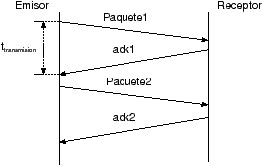

Introducción
El control de flujo es un mecanismo que regula la cantidad de datos que se transmiten para evitar la saturación del receptor. Según Stallings, es esencial para una comunicación eficiente.
Desarrollo
Este control asegura que el emisor no envíe datos más rápido de lo que el receptor puede procesar. Forouzan señala que puede implementarse mediante diferentes técnicas.

Conclusión
En conclusión, el control de flujo es clave para mantener la estabilidad y eficiencia de la comunicación.